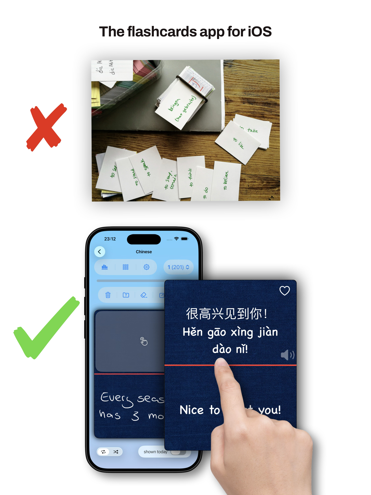
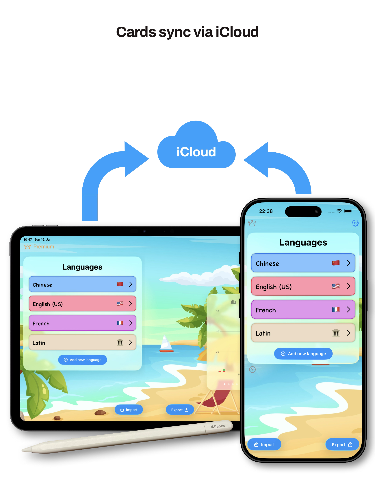
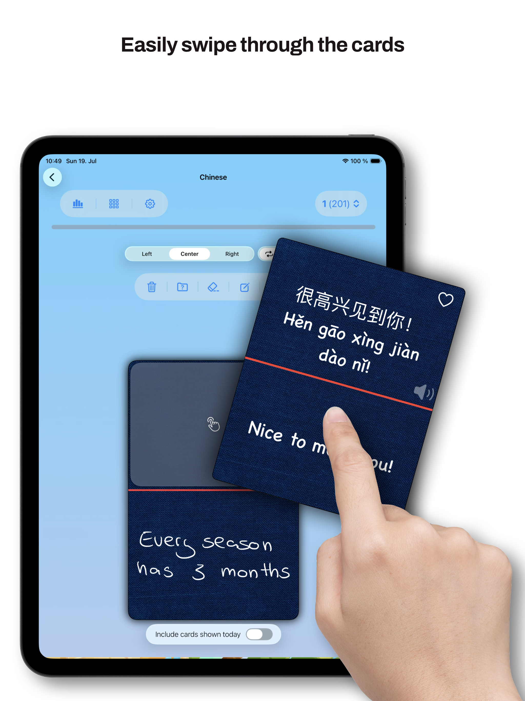
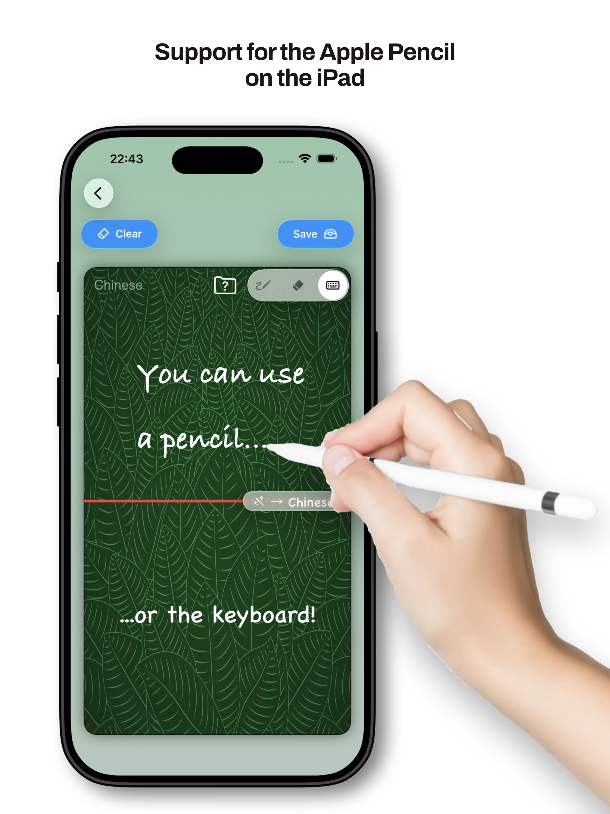
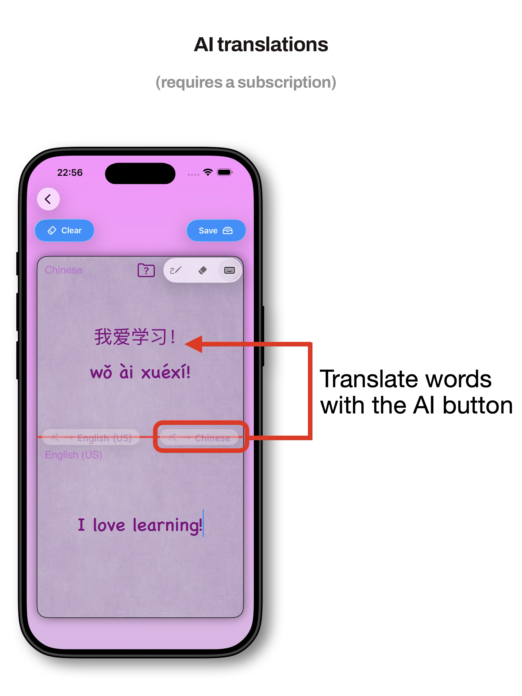
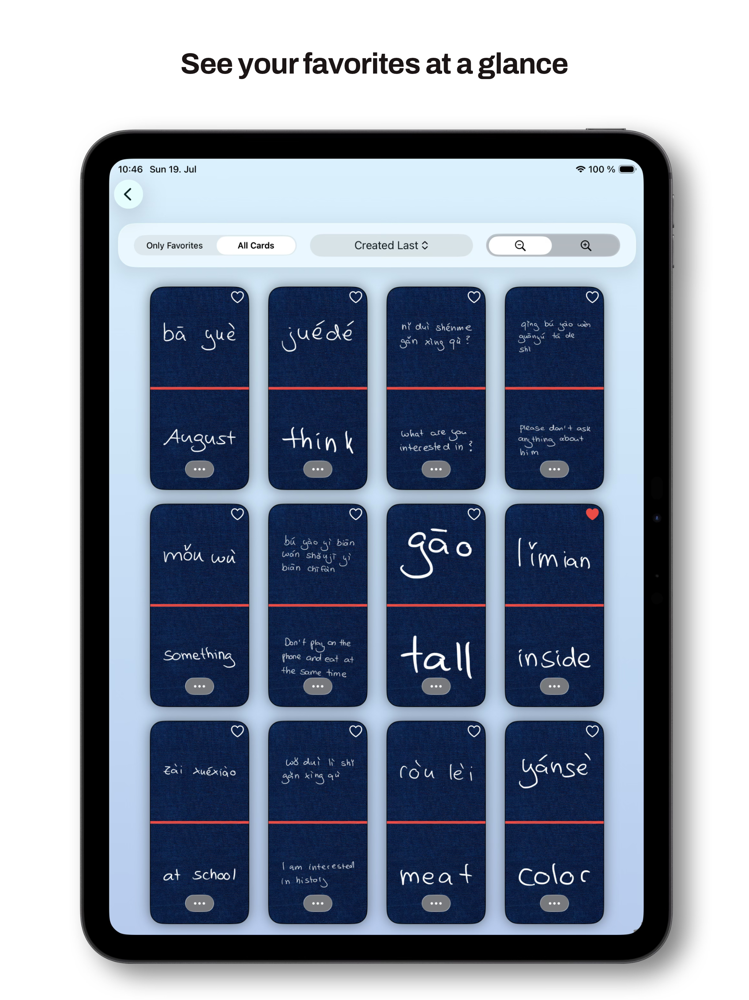

Download on the AppStore.
Scan the code to visit the app store.
A CLOSER LOOK
About VocabulAir
Explore the app with these preview screens.






Privacy Disclaimer
1. Introduction
Welcome to VocabulAir! We value your privacy and are committed to being transparent about how your data is handled. This Privacy Policy explains our practices regarding data collection, storage, processing, and protection in connection with our app.
VocabulAir uses Apple's CloudKit technology to store and manage your data. Your data is stored in your personal iCloud account, which we, as the developers, cannot directly access or control.
Additionally, users with a Premium subscription can use translation features powered by the OpenAI API. When you use these features, the text you submit for translation is transmitted to OpenAI for processing, as described in this policy.
For more information about Apple's data practices, please refer to Apple's Privacy Policy.
2. Data Collection and Use
iCloud and CloudKit
Data you create within VocabulAir is stored in your personal iCloud account using Apple's CloudKit technology. We do not have direct access to this data through our own servers.
Apple manages the storage and security of your iCloud data in accordance with its own privacy policies and practices.
Premium Translation Features
VocabulAir offers translation features to users with a Premium subscription. These features use the OpenAI API to process translation requests.
When you use a Premium translation feature:
- The text you submit for translation is sent to OpenAI through its API for processing.
- OpenAI processes the submitted text to generate a translation and returns the result to the app.
- The submitted text is shared with OpenAI only as necessary to provide the requested translation.
- The translation service is provided by OpenAI and is subject to OpenAI's Privacy Policy and applicable API data usage policies.
Please do not submit sensitive personal information in text for translation unless you are comfortable with it being processed by this third-party service.
We do not use the submitted text to independently identify you. The information transmitted to OpenAI is limited to what is necessary for the translation request, subject to the technical implementation of the service.
3. Key Points
- Data Storage: Data created within VocabulAir is stored in your personal iCloud account using CloudKit.
- Limited Developer Access: We do not have direct access to your personal iCloud data through our own servers.
- Premium Translation Processing: Text submitted for translation through Premium features is transmitted to OpenAI's API to generate translations.
- Third-Party Processing: OpenAI processes translation requests in accordance with its applicable privacy and API data usage policies.
- Security: Apple and OpenAI apply their respective security measures and data-handling practices to the services they provide.
4. Information Sharing and Disclosure
VocabulAir does not sell user data.
We do not have direct access to data stored in your personal iCloud account. However, when you use Premium translation features, the text you submit for translation is shared with OpenAI through its API to provide the requested service.
OpenAI processes this information in accordance with its applicable policies. For details about how OpenAI handles API data, please refer to OpenAI's API data usage policies.
We do not intentionally share translation text with other third parties except as necessary to provide the app's features or as required by applicable law.
5. Third-Party Services and Links
VocabulAir relies on the following third-party services:
- Apple CloudKit: For storing and synchronizing app data through your iCloud account.
- OpenAI API: For providing translation functionality to Premium subscribers.
These services have their own privacy policies and data-handling practices. We encourage you to review their respective policies:
VocabulAir may also contain links to other websites or services. Those websites are governed by their own privacy policies.
6. Children's Privacy
VocabulAir does not knowingly collect personal information from children directly. Data stored through CloudKit remains subject to Apple's applicable privacy practices.
Premium translation requests are processed by OpenAI. Users, and parents or guardians where applicable, should consider the third-party processing described in this policy when using translation features.
7. Changes to This Privacy Policy
We may update this Privacy Policy from time to time to reflect changes in technology, applicable law, or our business operations.
Any changes will be published on this page, and the updated date will be indicated at the top of the policy.
8. Contact
For questions about this Privacy Policy or VocabulAir's data-handling practices, please contact:
Daniel WicklowConSol Software GmbH
St.-Cajetan-Straße 43
81669 München
Germany